The Pedagogy Evaluation Platform is a web-based self-assessment tool built on Firmin's (2020) Techno-Pedagogical Practice framework. In Sprint 5 we delivered the two requirements Dr Firmin confirmed for the final development sprint: a participant can take the evaluation anonymously and then save the result to a new or existing account, and new accounts are verified with a 6-digit code sent by email. Dr Firmin also asked for a question bank during the sprint, so administrators can now edit the wording of the twenty statements from the admin dashboard. After the review build we added a forgot-password flow, archive instead of delete, and time on task, each tested and released.
| Mushfiqur Rahman | Lead Developer |
| Shafiullah Anik | Scrum Master |
| Albin Roy | Product Owner |
| Merajun Nabi | Tester |
| 01 | Summary |
| 02 | Sprint objectives |
| 03 | Sprint process |
| 04 | User stories |
| 05 | Anonymous start, saved result |
| 06 | Claim rules in the database |
| 07 | Email verification code |
| 08 | Question bank |
| 09 | Forgot password |
| 10 | Archive instead of delete |
| 11 | Time on task |
| 12 | Architecture changes |
| 13 | Quality assurance |
| 14 | Testing and acceptance |
| 15 | Risks and limitations |
| 16 | Deployment and handover |
| 17 | Retrospective |
| 18 | References |
| 19 | Appendix |
Sprint 5 had two confirmed requirements from the client: anonymous participation with the option to keep the result in an account, and verification of new accounts by an emailed code. Part-way through the sprint Dr Firmin also asked for a question bank, meaning the ability to see all twenty statements in the admin panel and edit their wording. We built and released that in the same sprint.
All three are implemented, deployed and verified against the twelve acceptance criteria we derived from the client's wording (Section 14). A thirteenth item, a forgot-password flow, was added on 13 October after we noticed the sign-in panel had no way to recover an account. It was built, verified and released the same day (Section 09). A fourteenth followed on 14 October when the client ruled that administrators must never delete an account, only archive it; it was built, verified and released the same day (Section 10). A fifteenth, on 15 October, asks the admin dashboard to show how long each participant spent on their evaluations; the data was already there, so it shipped the same evening (Section 11). As in Sprint 4, the rules live in the database rather than only in the browser. A stored anonymous result can be attached to an account only by a signed-in, verified user, only once, only within 24 hours of completing it, and under the same two-attempts-per-year rule as a normal submission. A statement's wording can be changed only by an administrator, and only the wording: category, order and weighting are locked by a trigger so the scoring model cannot drift.
Nine of the twelve criteria are verified by our automated database checks, browser checks,
read-only probes of the live system, and a live registration that received its verification
code once the project sender was configured on 13 October (Figure 5). The remaining three need
a claim and an administrator save on the live site. They are assigned to the tester's live run
(SPRINT5_TEST_PLAN.md sections A and B, QUESTION_BANK_TEST_PLAN.md section B)
and are marked that way in Section 14.
| Requirement area | Outcome | Status |
|---|---|---|
| R1 · Anonymous start, saved result | An anonymous participant completes the evaluation as before; the results page offers "Save these results to an account". Creating an account or signing in, without leaving the page, attaches the stored result to the account for the dashboard. | Delivered |
| R2 · Email verification code | Registration sends a 6-digit code to the given address; the account is usable only after the code is entered. Codes can be resent; signing in with an unverified address returns to the code screen. Codes are sent from noreply@crmpilot.com.au through a verified domain (configured 13 October) and verified arriving in a live test. |
Delivered |
| Question bank (added in sprint) | Administrators see the twenty statements in the admin dashboard and edit their wording. Only wording changes; every edit is stamped; participants read the current wording with the shipped copy as fallback. | Delivered |
| Forgot password (added 13 October) | "Forgot password?" on the sign-in panel emails a 6-digit reset code; the participant enters it with a new password and is signed in. Built and browser-verified on pull request 5, the reset-code email template set in the dashboard, merged and deployed to production on 13 October (version 2.4). | Delivered |
| Archive instead of delete (added 14 October) | Administrators can no longer delete a participant. Archive hides a participant from the dashboard, charts and export; Restore brings them back; nothing is removed. The migration also removes the administrator delete policies, so deletion is not an administrator action anywhere. Built and verified, the migration applied, merged and deployed to production on 14 October (version 2.5). | Delivered |
| Time on task (added 15 October) | The admin dashboard shows how long each participant spent: a Time column per participant, a Time on task card with the average and median per completed evaluation, "Took m:ss" on each session in the profile, and two CSV columns. No database change: every stored evaluation already records when its 10-minute session began and when it was submitted. | Delivered |
| Handover items from Sprint 4 | Keep-alive, backups, credential rotation, ownership transfer and the handover guide are planned for the handover to the university (Section 16). The email sender for verification codes was configured on 13 October. | Handover |
| Measure | Value | Measure | Value |
|---|---|---|---|
| Acceptance criteria | 15 · 12 verified, 3 at tester live run | Pull requests merged | 6 |
| Files changed | 28 | Lines added / removed | 1,695 / 379 |
| Automated database checks | 113, all passing (73 migration, 40 stress) | Database migrations applied live | 3 |
| Production deployments | 5 (12–14 Oct 2026) | New database objects | 1 function · 1 trigger · 1 policy · 1 constraint |
As confirmed by the client for Sprint 5, plus the request received during the sprint.
| Ref | Requirement as stated |
|---|---|
| R1 | Anonymous user registration and result saving. The user starts the evaluation anonymously. At the end, the system offers to create an account; the completed result is saved to that account and can be viewed later. |
| R2 | Email verification code. When a user registers, a verification code is sent to the email address given; the account is verified by entering that code. |
| QB | Question bank: see all questions in the admin panel and edit them. |
We read R1 as "the result that was stored anonymously becomes the account's result", not "the participant retakes the evaluation after registering". That keeps the scores the participant has just seen on screen, and it means the offer belongs on the results page, after submission, rather than at sign-up. R2 already existed as the registration step (a 6-digit code rather than a link). We kept it, re-verified it, and extended it so it also works when someone registers from the results page. For the question bank we read "edit them" as editing the wording only. The category, order and weighting of a statement are part of Firmin's instrument and of the scoring model, so they stay locked (Section 08).
How the sprint was planned, tracked and closed.
The client's two confirmed requirements set the sprint goal. The question bank was added when Dr Firmin asked for it on 12 October, and we delivered it the same day because it reused the admin dashboard and the database patterns we already had. A story closed only when its acceptance criterion in Section 14 had evidence: an automated database check, a browser check, or a read-only probe of the live system. We worked on feature branches and merged through pull requests. Database changes were applied in the Supabase SQL editor after the front-end release that tolerates their absence was live.
Let a participant start with nothing to lose, with no account and nothing stored until they submit, and once they have seen their result let them keep it with one verified step. And let the client own the instrument's wording without being able to break its scoring.
| # | Story | Origin | Status |
|---|---|---|---|
| S1 | As an anonymous participant, I want to be offered an account after I have seen my result, so that I can keep it without having retaken the evaluation. | R1 | Done |
| S2 | As a participant who already has an account, I want to sign in from the results page and have this result saved to that account. | R1 | Done |
| S3 | As a participant, I want my saved result to appear on my dashboard as my active result, with the two-attempts-per-year rule applied as for any submission. | R1 | Done |
| S4 | As the client, I want a stored anonymous result to be claimable only by the browser that submitted it, only once, and only for a limited time. | R1 · security | Done |
| S5 | As a new user, I want a 6-digit code emailed to me and my account verified by entering it — including when I register from the results page. | R2 | Done |
| S6 | As a participant, I want to resend the code, and to be returned to the code screen if I try to sign in before verifying. | R2 | Done |
| S7 | As an administrator, I want to see all twenty statements in the admin dashboard and edit their wording. | QB | Done |
| S8 | As the client, I want only the wording to be editable, every edit stamped, and recorded answers unaffected, so that the instrument's scoring stays valid. | QB | Done |
| S9 | As a participant, I want to read the current wording on the home page, in the questionnaire and in the admin responses view, with the shipped wording if the database cannot be reached. | QB | Done |
| S10 | As the client, I want the home page team section to match the sprint documents, so that the platform names the people accountable for it. | Carried over | Done |
| S11 | As a new user, I want the verification code to reach any email address, so that registration does not depend on who I am. | R2 | Done |
| S12 | As the tester, I want a scripted live run with a real account and a real administrator, so that the criteria the team cannot verify itself are closed with evidence. | Testing | Scheduled |
| S13 | As the client, I want the platform to run without the student team — its own sender, keys, monitoring, backups and a written guide — so that it survives handover. | Carried over | Handover |
| S14 | As a participant who has forgotten my password, I want a code emailed to me so that I can choose a new password and get back to my dashboard. | Added 13 Oct | Done |
| S15 | As the client, I want administrators to archive a participant rather than delete one, so that no evaluation data can be lost from the dashboard. | Added 14 Oct | Done |
| S16 | As an administrator, I want to see how long each participant spent on their evaluations, so that I can judge engagement and whether ten minutes is the right limit. | Added 15 Oct | Done |
The sprint backlog as stories, each with its acceptance criteria, priority and the team's relative estimate.
We wrote the stories from the client's wording at planning (R1, R2), from the mid-sprint request (question bank) and from our own observation after the review build (forgot password). Priority uses MoSCoW and the estimate is our relative sizing in story points. A story is Done only when every acceptance criterion has evidence (Section 14). Criteria that need a real inbox or a real administrator on the live site are closed by the tester's live run (S12).
| ID | Story | Acceptance criteria | Priority | Points | Status |
|---|---|---|---|---|---|
| S1 | As an anonymous participant, I want to be offered an account after I have seen my result, so that I can keep it without retaking the evaluation. |
| Must | 5 | Done |
| S2 | As a participant who already has an account, I want to sign in from the results page and have this result saved to that account. |
| Must | 3 | Done |
| S3 | As a participant, I want my saved result to appear on my dashboard as my active result, with the two-attempts-per-year rule applied as for any submission. |
| Must | 3 | Done |
| S4 | As the client, I want a stored anonymous result to be claimable only by the browser that submitted it, only once, and only for a limited time. |
| Must | 5 | Done |
| S5 | As a new user, I want a 6-digit code emailed to me and my account verified by entering it, including when I register from the results page. |
| Must | 3 | Done |
| S6 | As a participant, I want to resend the code, and to be returned to the code screen if I try to sign in before verifying. |
| Should | 2 | Done |
| S7 | As an administrator, I want to see all twenty statements in the admin dashboard and edit their wording. |
| Must | 5 | Done |
| S8 | As the client, I want only the wording to be editable, every edit stamped, and recorded answers unaffected, so that the instrument's scoring stays valid. |
| Must | 3 | Done |
| S9 | As a participant, I want to read the current wording on the home page, in the questionnaire and in the admin responses view, with the shipped wording if the database cannot be reached. |
| Should | 3 | Done |
| S10 | As the client, I want the home page team section to match the sprint documents, so that the platform names the people accountable for it. |
| Could | 1 | Done |
| S11 | As a new user, I want the verification code to reach any email address, so that registration does not depend on who I am. |
| Must | 3 | Done |
| S12 | As the tester, I want a scripted live run with a real account and a real administrator, so that the criteria the team cannot verify itself are closed with evidence. |
| Must | 3 | Scheduled |
| S13 | As the client, I want the platform to run without the student team — its own sender, keys, monitoring, backups and a written guide — so that it survives handover. |
| Must | 8 | Handover |
| S14 | As a participant who has forgotten my password, I want a code emailed to me so that I can choose a new password and get back to my dashboard. |
| Should | 5 | Done |
| S15 | As the client, I want administrators to archive a participant rather than delete one, so that no evaluation data can be lost from the dashboard. |
| Must | 5 | Done |
| S16 | As an administrator, I want to see how long each participant spent on their evaluations, so that I can judge engagement and whether ten minutes is the right limit. |
| Should | 3 | Done |
| Measure | Value | Measure | Value |
|---|---|---|---|
| Stories in the sprint | 16 | Story points committed | 60 |
| Stories done | 14 | Story points done | 49 |
| Must / Should / Could | 10 / 5 / 1 | Handover | S12 (3), S13 (8) |
Nothing changes for the anonymous participant until the result is on screen. They begin
without an account, nothing is stored while they answer (Sprint 4, R6), and one call to
submit_assessment() stores the completed evaluation with no user attached. The
completion screen now tells them where the result can be kept: "Your results are saved
anonymously — on the results page you can save them to an account."
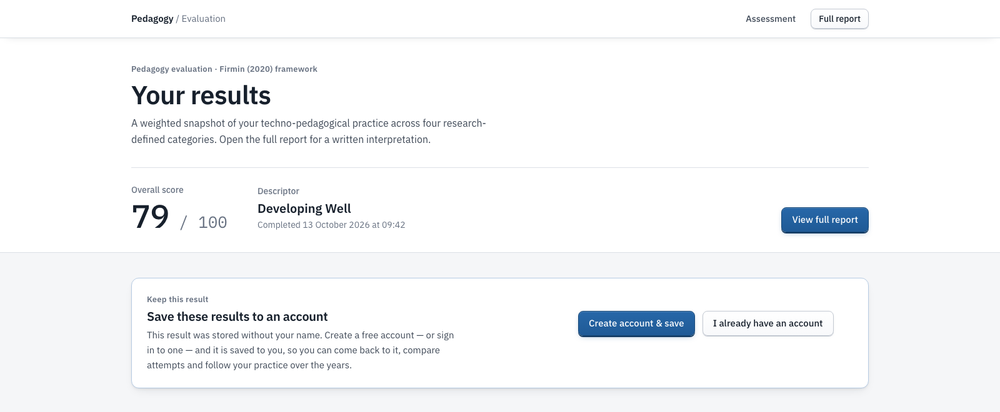
| Condition | Behaviour |
|---|---|
| When the card appears | Only when the participant is anonymous and the browser holds the session id that submit_assessment() returned — that is, the result exists on the server. A result that was saved on the device only (server unreachable) shows no card, because there is nothing to attach. |
| Create account & save | Opens the sign-in modal in claim mode on the Create account tab: title "Save your results", no Anonymous tab, button "Create account & save". Registration proceeds to the verification code (Section 07). |
| I already have an account | Same modal on the Sign in tab; button "Sign in & save results". |
| Closing the modal | Escape, the × button or the backdrop close it; the participant stays anonymous and the card is unchanged. |
| Refresh during verification | The pending verification is kept for the tab, so the code panel reopens — still in claim mode — and entering the code still saves the result. |
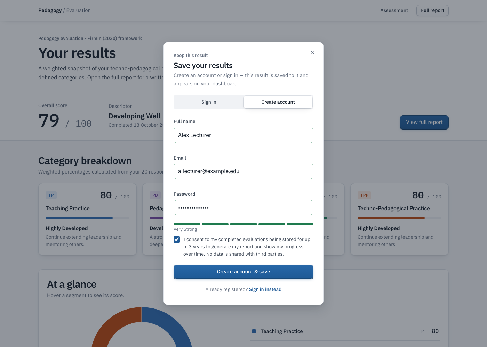
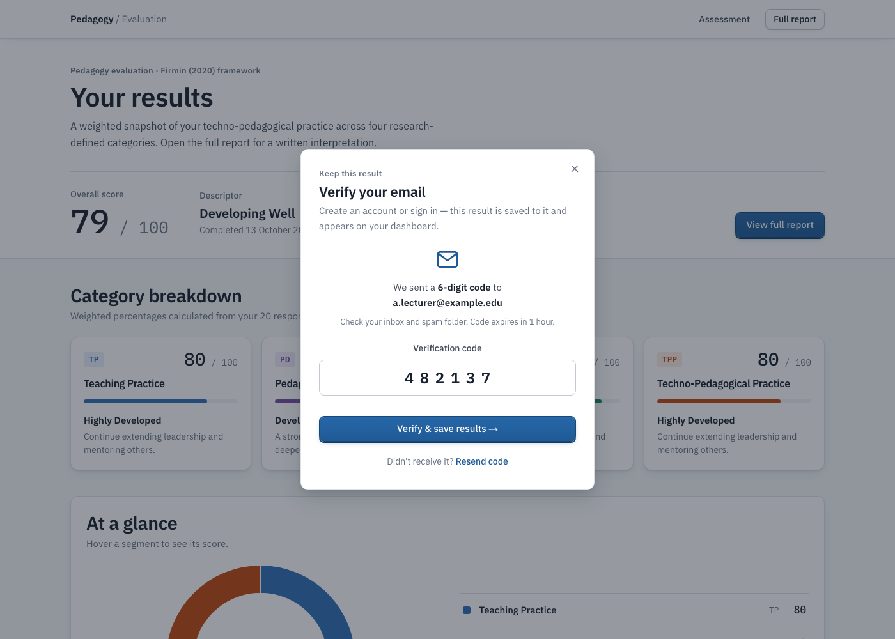
The participant becomes the signed-in identity without the device clearing the result on
screen (Section 12), and the page calls claim_assessment() with the session id. While
it runs the card says "Saving this result to your account…". On success it shows "Saved to
your account" with a link to the dashboard, and the anonymous email-capture card disappears
because the account's address now receives results. If the participant already had an
attempt this year, the card says so: the earlier attempt is kept as their previous attempt,
exactly as after a normal second submission. If the attachment fails the card says why
(Section 06) and still offers the dashboard. The account itself is fine, and their next
evaluation will be saved to it automatically.
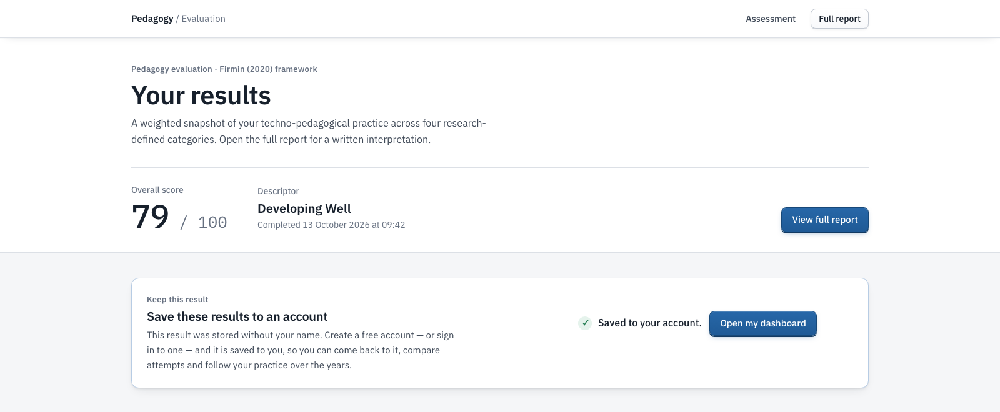
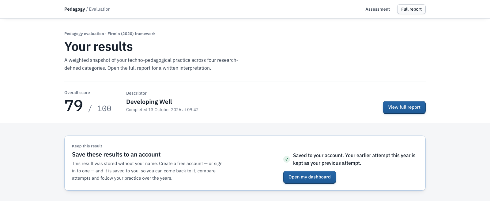
The attachment is one database function, claim_assessment(p_session_id) in
sprint5-claim.sql. It runs with the caller's identity from the authentication token,
so the browser cannot say who it is. We kept the random session id as the only credential. It
is a version-4 UUID that submit_assessment() returns to the browser that submitted,
nothing lets another caller list or guess unclaimed sessions (row-level security: users read
their own rows, administrators read all), and a result can be claimed once.
| Rule | Enforcement |
|---|---|
| Only a signed-in, verified account | The anonymous web role has no execute grant; inside the function an anonymous-token caller is also refused ("Sign in to save results to your account"). |
| Only a stored, completed, still-anonymous result | The session must exist, have completed_at set and user_id null; otherwise CLAIM_UNAVAILABLE. The row is locked for the duration so two claims cannot race. |
| Within 24 hours of completing | Older results answer CLAIM_EXPIRED. Long enough to decide after seeing the result; short enough that a session id left on a shared device does not stay claimable. |
| Attach | user_id is set to the caller and participant_email to the account's address (an anonymous email entered earlier is kept only if the account has none). |
| Two attempts per year | The claimed result becomes the active result; the newest earlier attempt in the same calendar year (Australia/Melbourne) is kept as the previous attempt; anything older that year is removed — the same trim as on submission. |
| Return value | { session_id, year, previous_id, removed }, which the page uses to say whether a previous attempt was kept. |
claim_assessment(p_session_id uuid) returns jsonb — security definer
1 caller must be signed in and not an anonymous-token user → 42501
2 session must be completed and have no user yet (row locked) → CLAIM_UNAVAILABLE
3 completed less than 24 hours ago → CLAIM_EXPIRED
4 set user_id = caller, participant_email = account address
5 keep the claimed result + the newest earlier same-year attempt; delete older same-year attempts
6 return { session_id, year, previous_id, removed }
The session id is held in the tab's session storage, not in persistent storage. So the offer lives as long as the results tab on that device, and on the server for 24 hours. A participant who closes the tab before deciding cannot claim later. We chose that over leaving a claimable id behind on shared or public computers.
Creating an account sends a 6-digit code to the address given, and the account is usable only
once that code has been entered. We use Supabase Auth's sign-up confirmation with the
"Confirm signup" template set to emit the token rather than a link, using the branded template
supabase/templates/confirm-signup.html. We read the live authentication settings on
13 October 2026: email confirmation is required and anonymous sign-ins are enabled. The same
day we switched the authentication mailer from Supabase's built-in service, which only
delivers to members of the project's own organisation, to custom SMTP through Resend. It
sends as noreply@crmpilot.com.au on a domain whose DKIM and SPF records were already
verified.
| Stage | Behaviour |
|---|---|
| Register | Full name, email, password (6+ characters, strength shown) and consent. On submit the account is created unconfirmed and the modal switches to "Verify your email", showing the address. |
| Code entry | Digits only, six required before the button enables. A wrong code says "Incorrect code… if you clicked Resend, only the newest code works"; an expired code says to resend. Codes expire after one hour. |
| Resend | "Resend code" requests a fresh code; a toast confirms it. Only the newest code is accepted. |
| Sign in before verifying | Sign-in is refused by the service; the page returns the participant to the code panel and requests a new code automatically. |
| Existing address | Registering with an address that already has a confirmed account is refused with "An account with this email already exists" — including the case where the service answers with a placeholder user to avoid revealing registered addresses; no code is sent. |
| On success | The profile row is created, the participant is signed in, and either moves to the questionnaire (home page) or stays on the results page while the result is saved (claim mode). |
| Refresh mid-flow | The pending address and intent are kept for the tab (one hour), so the code panel reopens after a refresh. |
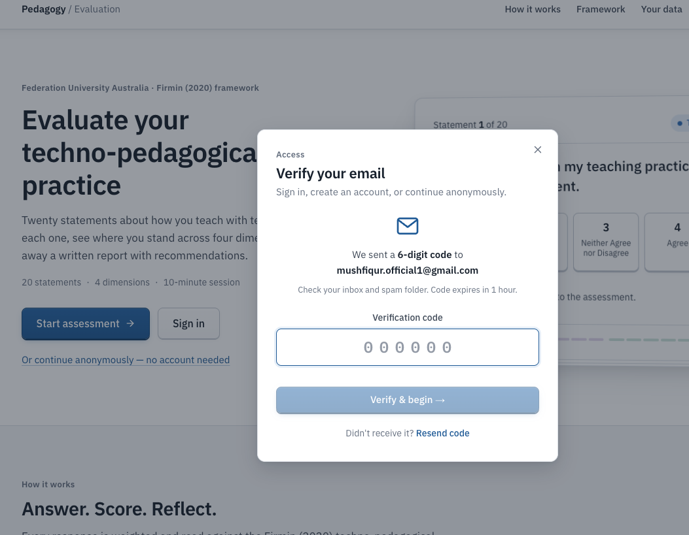
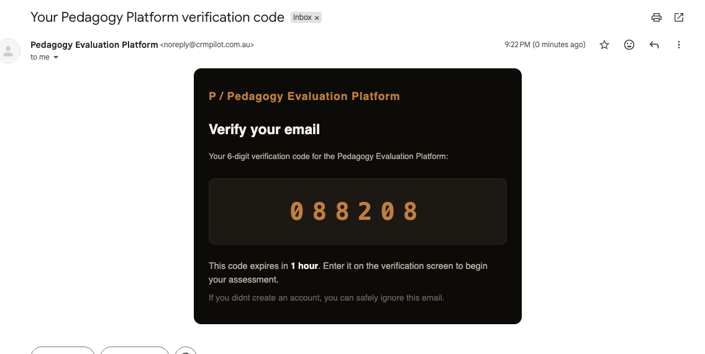
Until the sender was configured we could not see a code arrive in any inbox, and this item had carried over from Sprint 4. With custom SMTP in place, a registration on the live site received its code within a minute (Figure 5). That is the evidence for acceptance criterion 8. The results-email function still uses its earlier sender and is listed in Section 16.
The twenty statements have always lived in the questions table, but the platform read
the copy shipped in js/questions.js. The admin dashboard now has a Question bank panel
between the demographic summary and the participant sessions. It shows every statement with
its number, category, a text box with a character counter, when and by whom it was last
edited, a Save button (Ctrl/⌘+Enter also works) and Restore original. Every page that shows a
statement reads the database first and falls back to the shipped wording if it cannot be
reached. That covers the home page, the questionnaire and review screen, and the admin
responses view. The read is capped at 2.5 seconds so a slow connection never holds up the
evaluation.
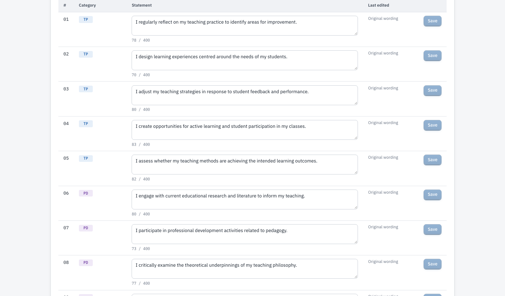
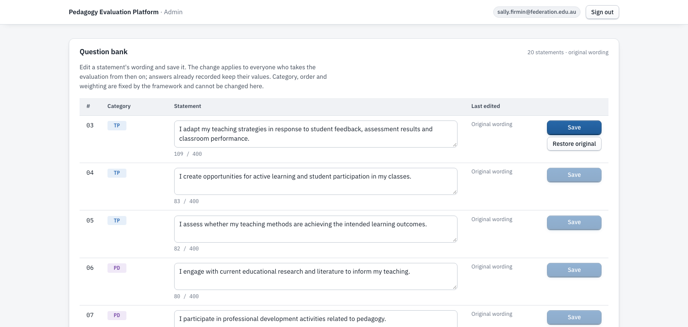
| Rule | Enforcement (question-bank.sql) |
|---|---|
| Only administrators | Row-level security policy admins_update_questions for the two administrator addresses; everyone can still read. A non-administrator's update affects zero rows. |
| Only the wording | Trigger questions_guard_update raises "Only the wording of a question can be edited" if code, category, weight, order or active flag would change — so the scoring model (five statements per category, equal weights) cannot be altered from the dashboard or by a crafted request. |
| A real sentence | Constraint questions_text_length: trimmed wording between 10 and 400 characters. |
| Audit | The trigger stamps updated_at and updated_by (the administrator's email) on every edit; the panel shows them and counts edited statements. |
| Past data unchanged | Responses store the answer value and the statement code; an edit changes what future participants read, not stored answers. |
| Safe to ship first | Until the migration is applied the panel is read-only and says so; the page never depends on the columns existing. |
A reworded statement changes what later answers mean. The platform records who changed what and when, so a change can be reported. Whether an edit keeps a statement equivalent to Firmin's original is a research judgement for the client, not something the software can enforce.
Not in the client's Sprint 5 list. We added it after the review build when we noticed the sign-in panel had no way to recover an account.
Until now a participant who forgot their password was locked out of their dashboard and history, with no way back except contacting an administrator. The sign-in panel now has a "Forgot password?" link. It asks for the account's address and emails a 6-digit reset code through the same sender as registration. The participant enters the code and a new password and is signed in. The flow works wherever the sign-in modal opens, including the results page in save-to-account mode, where the final button reads "Set password & save results" and the anonymous result is attached just as it would be after a normal sign-in.
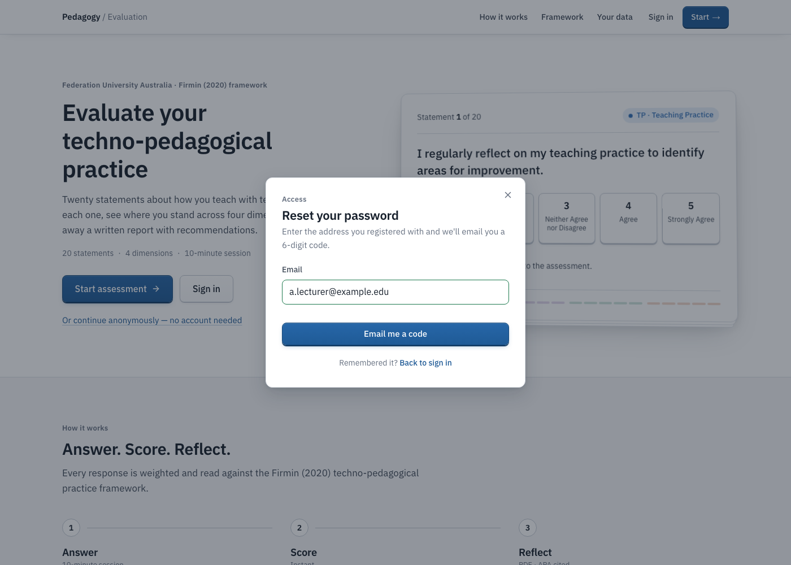
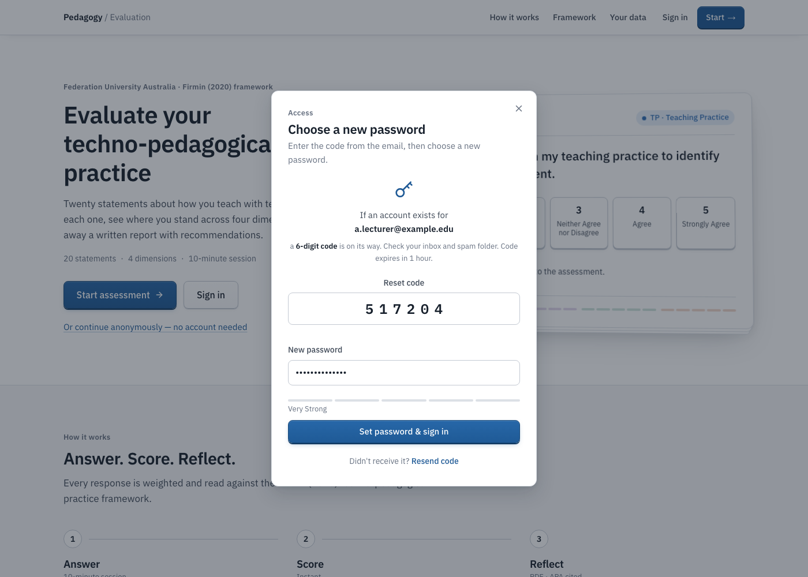
| Stage | Behaviour |
|---|---|
| Request | The address is submitted to the authentication service's recovery endpoint. The response is the same whether or not an account exists, and the next step says "if an account exists for …", so the form cannot be used to discover registered addresses. |
| Code | Six digits, one hour, only the newest code accepted; "Resend code" requests another. A wrong or stale code is refused with one message, because the service reports both the same way. |
| New password | At least six characters, with the register panel's strength meter. The code signs the participant in; the password is set on that session; the service refuses a password identical to the old one. |
| After | The normal post-sign-in path runs: on the home page the participant goes to the questionnaire; on the results page the stored result is saved to the account. |
| Refresh | The pending reset is kept for the tab for one hour, so a refresh returns to the code step; closing the modal forgets it. |
| Offline | "Can't reach the sign-in service" under the field, as for sign-in. |
We built it on branch feat/forgot-password (commit 2ea485f) as pull request 5,
tested it on the preview deployment, merged it (b85315f) and it went live at version
2.4 on 13 October. Browser checks with the authentication calls stubbed all passed: the link,
step copy, the hidden tab row, submit gating, digit sanitising, the strength meter, the
wrong-code message, restore after refresh, the success sequence (recovery code, then
password, then sign-in event and identity) and the claim-mode label. The dashboard "Reset
password" template was set to emit the code (supabase/templates/reset-password.html)
before the merge, so the email carries a 6-digit code from the same sender as registration.
The tester's end-to-end run with a real account (FORGOT_PASSWORD_TEST_PLAN.md) is
listed with the other live-run items.
A rule from the client after the review build: an administrator must never delete an account, only archive it.
The admin dashboard had a Delete button on every participant row, and a hidden "reset all test data" control, both backed by administrator delete policies in the database. We removed all of it. The row button is now Archive: the participant disappears from the table, the stats, the charts and the CSV export, and nothing is removed. A "Show archived" toggle reveals archived participants greyed out with an Archived badge that records when and by whom, and Restore brings them back. Archived participants can still sign in and use their dashboard; the archive only changes what administrators see.
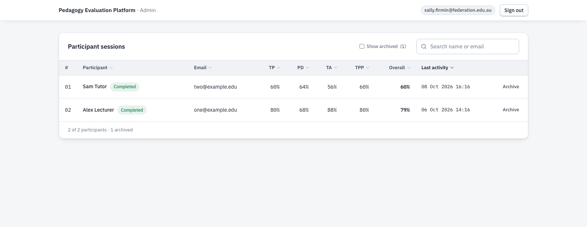
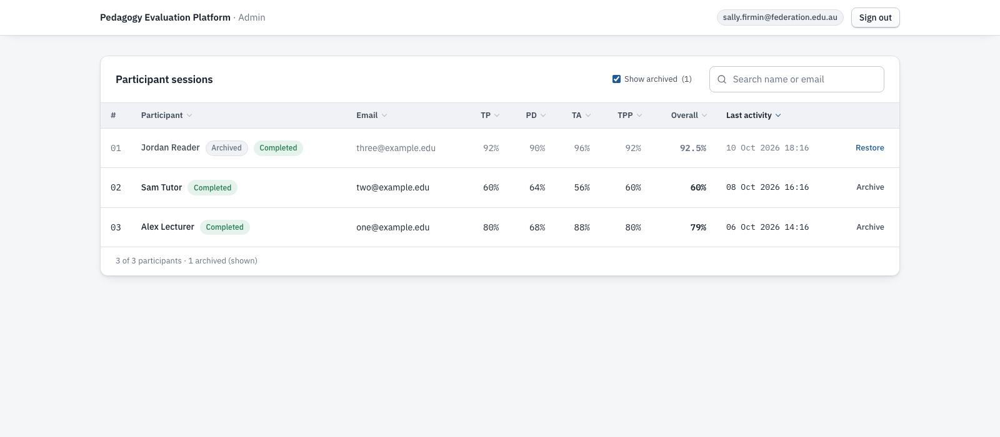
| Rule | Enforcement (archive-participants.sql) |
|---|---|
| Administrators cannot delete | The three administrator delete policies and the reset-test-data function are dropped. An administrator's delete now affects zero rows under row-level security, whatever client sends it. Participants' own delete_previous_attempt() is unaffected. |
| Only administrators archive or restore | One function, set_participant_archived(), checks the caller's address; the anonymous role has no execute grant. |
| A participant cannot change their own state | Participants may update their own profile row, so a trigger refuses any change to the archive columns from a non-administrator. |
| Administrator accounts cannot be archived | Refused inside the function. |
| Nothing is lost | Profile, sessions and responses stay; archived data still falls under the three-year purge like everything else. |
| Safe to ship first | Until the migration is applied the dashboard loads as before, without the Archive button or the toggle. |
Built on branch feat/archive-participants (commit f687899) as pull request 6.
The migration passed 20 automated checks in PGlite on the full schema chain, applied over the
old delete policies first: archive and restore with stamping, administrator accounts refused,
non-administrator and anonymous callers refused, a participant unable to un-archive their own
row, the delete policies and reset function gone, and an administrator delete affecting zero
rows. Browser checks with the data layer stubbed covered the controls, the stats, the toggle
and the restore. The migration was applied to the production database on 14 October and
confirmed by read-only probes: the archive function present and refusing the anonymous role,
the reset function gone, the archive columns readable. Pull request 6 was merged
(1f3805c) and the live dashboard serves version 2.5 with Archive in place of
Delete. Figure 11 shows the migration's effect on the database roles.
set_participant_archived(p_user_id uuid, p_archived boolean) returns jsonb — security definer
1 caller's address must be an administrator's → refused
2 participant must exist → not found
3 participant must not be an administrator → refused
4 set archived_at / archived_by (or clear both)
5 return { user_id, archived, archived_at }
also: drop policy admins_delete_sessions, admins_delete_responses, admins_delete_users
drop function admin_reset_test_data()
A request from the client on the eve of the poster session: show on the admin dashboard how much time each user has spent.
We did not need a new table or a tracker in the browser. Since Sprint 4 every stored evaluation carries the moment its ten-minute session began and the moment it was submitted, because the server uses those two timestamps to refuse late submissions. The time a participant spent is simply their difference. The dashboard now shows it in four places: a Time column in the participant table, totalled across their completed evaluations and sortable, with the count and the latest attempt on hover; a Time on task card under Engagement with the average and the median per completed evaluation; a "Took m:ss" line on each session in the participant profile; and two columns in the CSV export. Archived participants are left out, as they are everywhere else.
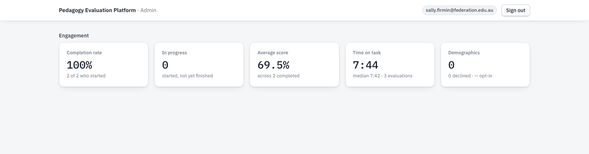
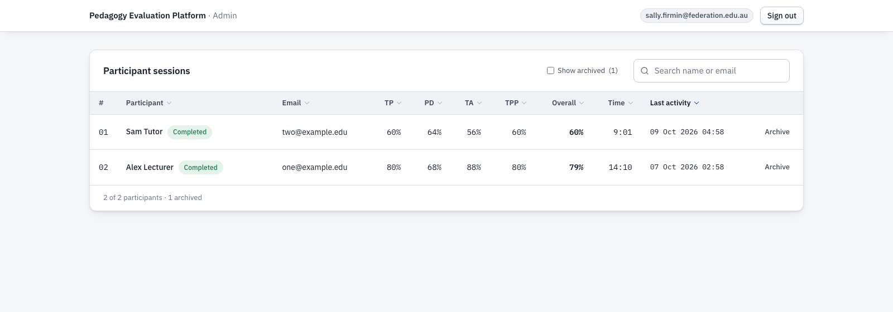
| Rule | Behaviour |
|---|---|
| Source of truth | Start is the session start the browser reported and the server validated; finish is the server's own clock at submission. Nothing is written while the participant answers, so there is nothing to track in between. |
| Per participant | The column sums every completed evaluation; a returning participant with two attempts shows the total, and the hover text gives the count and the latest attempt's time. |
| Per evaluation | The card averages across evaluations, not participants, so a second attempt counts as its own evaluation. The median is shown alongside because a few slow sessions move an average more than they should. |
| Older rows | Evaluations stored before the session rule could run for hours. They are capped at the eleven-minute limit so they cannot distort the averages, and the cap is visible as "11:00". |
| Unfinished | A session that was started but never submitted has no time and is not counted. |
Built on branch feat/time-on-task (commit 679e4a0) as pull request 7. Browser checks with the data layer stubbed: a participant with two
evaluations of 7:42 and 6:28 shows 14:10 with "2 completed evaluations · latest 7:42" on hover;
a participant with one 9:01 evaluation and a ninety-minute legacy row shows 20:01, the legacy
row capped at 11:00; an unfinished participant shows a dash and sorts last; the card reports an
average of 8:33 and a median of 9:01 over four evaluations with an archived participant
excluded; the profile lists "Took 7:42" and "Took 6:28"; sorting by the column works in both
directions; no console errors. Merged as c6f7772 and live at version 2.6 the same evening. Figure 13 shows how the three figures are derived.
time spent (one evaluation) = completed_at − created_at, capped at 11:00 time column (participant) = sum over their completed evaluations time on task card = mean and median over all completed evaluations of active participants
The platform is still a static front end (HTML, CSS and vanilla JavaScript, hosted on Vercel) over Supabase (PostgreSQL, authentication, edge functions). In Sprint 5 we changed four parts of the client code so that sign-in can happen on any page and hand control back to that page.
| Change | Why |
|---|---|
The sign-in modal is rendered by js/auth.js | Its markup lived only in the home page, so no other page could open it. It is now injected by the script, and any page that loads auth.js and css/modal.css can open it. The home page lost 100 lines of duplicated markup (Figure 14). |
| Intents | The modal is opened with an intent — start (default: go to the questionnaire) or claim (stay here and save the result). The intent sets the title, copy and button labels, hides the Anonymous tab, and survives a refresh during verification. |
The ped:signed-in event | After a successful sign-in, registration or verification, auth.js dispatches a cancelable document event carrying the profile and intent. A page that cancels it owns what happens next (the results page saves the result); otherwise auth.js redirects as before. Pages no longer need to know how sign-in works. |
PED.identity.adopt() | begin() clears another participant's answers on shared devices — correct at the start, wrong when the same person is becoming an account holder with a result on screen. adopt() switches identity without touching the result on the device. |
PED.questionBank (js/question-bank.js) | sync() overlays database wording onto PED.QUESTIONS in place, so modules that already hold a reference see the new text; fetchAll(), update() and defaultText() serve the admin panel. Only text is ever changed on the client. |
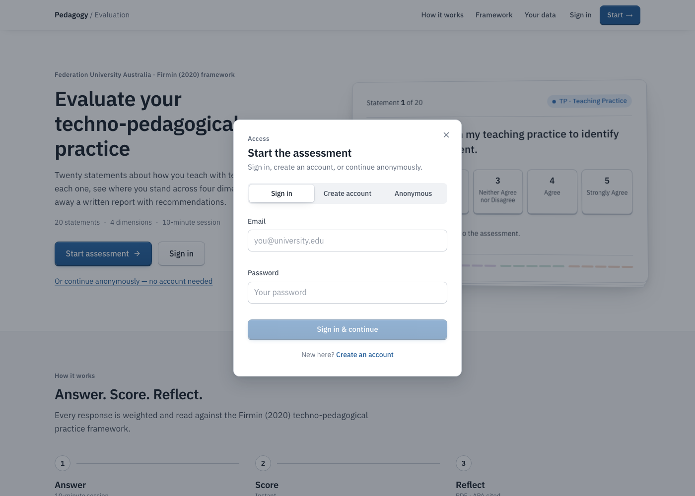
auth.js with its three tabs.| Database object | Purpose |
|---|---|
claim_assessment(uuid) | Attaches a stored anonymous result to the caller's account under the rules in Section 06. SECURITY DEFINER; executable by the signed-in role only. |
questions.updated_at, questions.updated_by | Audit columns stamped by the trigger on every wording edit. |
questions_text_length | Check constraint: trimmed wording of 10–400 characters. |
questions_guard_update() + trigger | Locks code, category, weight, order and active flag; trims and stamps the edit. |
admins_update_questions | Row-level security policy allowing the two administrator addresses to update. |
Both migrations are idempotent. We tested them on the full schema chain
(supabase-setup.sql, admin-policies.sql, sprint3-demographics.sql,
sprint4-attempts.sql, sprint5-claim.sql, question-bank.sql) and applied
each one twice. Both front-end releases went live before their migration and behave correctly
without it: the results card reports "needs the Sprint 5 database update" after sign-in, and
the question bank panel is read-only with a notice.
Defects and process issues found during development and release, all resolved before or on the day of release.
The existing PED.identity.begin() clears the previous participant's answers, scores and
session id whenever the identity changes. That is right on a shared device and exactly wrong
for a participant creating an account to keep the result on screen: the first claim would
have deleted the session id it needed. We added adopt(), which switches identity
without touching the result, and begin() now calls it after its clearing step so the
two cannot drift apart.
The modal markup was part of index.html, so the results page had no way to show it. We
moved it into auth.js as a single source, with the intent mechanism described in
Section 12, and checked that the home page modal is unchanged (three tabs, close by ×,
backdrop and Escape).
The question bank was built on top of the Sprint 5 branch, so its pull request targeted that
branch until GitHub retargets it to main when the base is merged. We merged it seven
seconds after the Sprint 5 pull request, before the retarget, so it landed on the
already-merged feature branch and not on main. We noticed within minutes because the
live site still served asset version 2.2 when we expected 2.3, and fixed it with a third pull
request from the feature branch to main containing the same fifteen files. The lesson
is recorded in Section 17.
PGlite 0.3.x fails on the PL/pgSQL raise statement ("cannot resolve symbol
setTempRet0"), which both migrations use for their refusals. We pinned the harness to PGlite
0.2.17, on which all 73 checks run.
The status line now reads "Your results are saved anonymously — on the results page you can save them to an account", so the offer on the next page is expected rather than a surprise.
The team section still named a member who had left. We corrected it (Product Owner Albin Roy, Tester Merajun Nabi) and released it on 12 October.
We ran all three migrations in PGlite (PostgreSQL compiled to WebAssembly) against the full schema chain, with mocked authentication for anonymous, signed-in, anonymous-token and administrator callers. All checks passed.
| Migration | Checks | Count |
|---|---|---|
sprint5-claim.sql | Claim by the submitting account succeeds and sets user and email; a second claim of the same result is refused; claims by an anonymous-token caller, without a user, of another user's result, of an in-progress session and of a non-existent session are refused; results older than 24 hours are refused; the two-per-year trim keeps the newest earlier attempt and removes older ones; return value; execute grant denied to the anonymous role; migration applied twice. | 32 |
question-bank.sql | Audit columns added; wording shorter than 10, blank, and longer than 400 characters refused; each of code, category, weight, order and active flag locked; wording trimmed; updated_at/updated_by stamped with the editor; administrator update allowed and non-administrator update affects no rows under row-level security; select still open to all; migration applied twice. | 21 |
archive-participants.sql | Applied over the old delete policies: archive and restore with stamping; administrator account refused; unknown id; non-administrator and anonymous callers refused; a participant cannot un-archive their own row but can still edit their profile; anon has no execute grant; delete policies and reset function gone; an administrator delete of a session or a user affects no rows; participants' own deletion unaffected; no rows lost; migration applied twice. | 20 |
auth.js unchanged — three tabs, validation, close behaviours; assets load at the current version with no console errors on every page.After the last release we tried to break it. Three angles: hostile and bulk data against the database rules, hostile requests against the live service, and the whole participant journey on a phone-sized screen.
| Angle | What we threw at it | Result |
|---|---|---|
| Database, 40 checks | 300 participants; 200 signed-in and 100 anonymous submissions; 19 answers, an extra key, answers 0 and 6, a string, a null, an empty object and an array; a start 12 minutes old, 10.5 minutes old and in the future; claims with a random id, another participant's result, an anonymous token, the same result twice by two users, a third same-year claim, and a claim after 24 hours; statement wording of exactly 400 and 401 characters, 9 characters, unicode with quotes and HTML, an injection-shaped string, a category change by an administrator, 50 rapid edits; 40 archive/restore toggles, 150 participants archived in one go, an archived participant reading their own data and trying to restore themselves; deletes by a participant and by an administrator; a three-year-old session. | All 40 passed. Every bad input refused before any write; 0.7 ms per submission; 150 archives in 25 ms; one purge removed the old session and nothing else. |
| Live service, 11 requests plus a burst | From an unsigned client: incomplete, empty, malformed and expired submissions; claims with a random and a non-UUID id; archive, delete-attempt, purge and the removed reset function; direct updates and deletes on the questions, sessions and users tables; then 30 refused claims back to back. | Every request refused with the intended message; the direct writes affected zero rows and the live wording is unchanged; the burst finished in two seconds with no throttling; pages arrive in about 0.3 s at 2–14 KB. |
| Phone, 375 px | Home, anonymous start, the welcome screen, all twenty statements answered through the real controls, the review screen; then the results, dashboard, admin and report pages signed out. | Every screen fits without horizontal scroll; the clock ran from 10:00; nothing was stored and no request left the browser before submission; no console errors (Figure 15). |
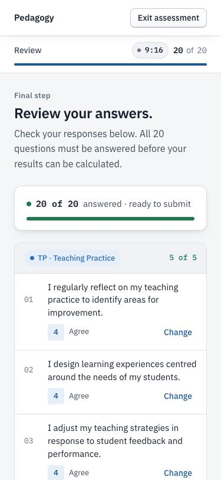
| Request to the live system (writes nothing) — 13 and 14 October 2026 | Result |
|---|---|
Fetch results.html and admin.html from the live site | Version 2.3 assets on 13 October (2.5 after the later releases); save card and question bank panel present |
Call claim_assessment without signing in | Refused — permission denied (42501); the function exists and is not executable by the anonymous role |
Read questions with the audit columns | Columns present; twenty rows; no edits recorded yet |
| Update a statement's wording without signing in | Zero rows affected (row-level security) |
| Read authentication settings | Email confirmation required; anonymous sign-ins enabled |
| Register on the live site with a Gmail address (creates one test account) | Code emailed from noreply@crmpilot.com.au within a minute (Figure 5) |
Call set_participant_archived without signing in (14 October) | Refused — permission denied; the archive function exists and is not executable by the anonymous role |
Call admin_reset_test_data (14 October) | Function not found — the reset path is gone from the live database |
Fetch admin.html and its script after the merge (14 October) | Version 2.5; Archive and Restore actions present, no Delete action, no reset button |
| Vercel production deployment | Deployed from 94f1dee (12 October 2026) |
We applied the Sprint 5 and question-bank migrations to the production database in the Supabase SQL editor on 12 October 2026, and the archive migration on 14 October, confirming each with the probes above straight afterwards.
Each acceptance criterion we derived from the client's Sprint 5 wording, with its evidence.
"Tester live run" marks the three criteria whose evidence is a claim or an administrator save
on the live site. The scripts are SPRINT5_TEST_PLAN.md (A and B) and
QUESTION_BANK_TEST_PLAN.md (B).
| # | Criterion | How it is met | Evidence | Result |
|---|---|---|---|---|
| 1 | The user can start the evaluation anonymously | Unchanged from Sprint 4; nothing stored until submission | §05, live run (Sprint 4) | Met |
| 2 | At the end, the system offers to create an account | "Save these results to an account" card on the results page | §05, Fig. 1–2, browser | Met |
| 3 | An existing account holder can sign in and keep the result | Sign in tab in claim mode | §05, browser | Met |
| 4 | The completed result is saved to the account | claim_assessment() sets the owner and email | §06, DB tests, live probe | Met |
| 5 | The result can be viewed later on the dashboard | Claimed result is the account's active result; dashboard reads the account's rows | §06, DB tests; live run A9–A10 | Tester live run |
| 6 | Scores stay on screen; no retake needed | identity.adopt(); card updates in place | §05, Fig. 4, browser | Met |
| 7 | Only the submitting browser can claim; once; within 24 hours; attempt rules applied | Function rules; anonymous role has no grant | §06, DB tests, live probe | Met |
| 8 | Registering sends a 6-digit code to the email given | Sign-up confirmation with the code template; custom SMTP on a verified domain | §07, Fig. 5, live | Met |
| 9 | The account is verified only by entering the correct code | Wrong and expired codes refused; sign-in before verifying returns to the code panel | §07, browser; live run A7–A8, C3–C4 | Tester live run |
| 10 | Administrators see all twenty statements in the admin panel | Question bank panel | §08, Fig. 5, browser, live probe | Met |
| 11 | Administrators can edit a statement and the change reaches participants | Save under row-level security; pages read the database first | §08, Fig. 6, DB tests; live run B4–C2 | Tester live run |
| 12 | Only wording changes; edits are stamped; recorded answers unaffected | Trigger lock, length constraint, audit columns | §08, DB tests, live probe | Met |
| 13 | Added: a forgotten password can be reset with an emailed code | Forgot and reset steps; recovery code signs in, new password set | §09, Fig. 8–9, browser, live; tester run | Met |
| 14 | Added: administrators archive a participant, never delete one | Archive/Restore; delete policies removed; archive function guarded | §10, Fig. 10–11, DB tests, browser, live | Met |
| 15 | Added: the dashboard shows how long each participant spent | Time column, Time on task card, profile line, CSV columns | §11, Fig. 12–13, browser, live | Met |
Known risks carried into handover, with the mitigation in place or planned.
| Risk | Consequence | Mitigation | Status |
|---|---|---|---|
| Verification codes come from a company-domain sender | noreply@crmpilot.com.au belongs to the development team's company, not the university. | Swap to a university sender at handover by changing the SMTP settings only; DKIM and SPF are aligned on the current domain. The results-email function still uses its earlier sender (Section 16). | Accepted |
| The offer to save lives in the results tab | Closing the tab before deciding loses the chance to claim. | Deliberate: no claimable id is left in persistent storage on shared devices. The server window is 24 hours. | Accepted |
| Reworded statements change meaning | Answers before and after an edit may not be comparable. | Edits are stamped with time and editor; equivalence to the original is the client's research judgement. | Accepted |
| Administrators are a fixed list | Adding an administrator needs a code and policy change. | Existing design; the handover guide will document the two places to change. | Accepted |
| Free-tier database pauses after seven idle days | Sign-in, submission and claims fail while paused. | Daily keep-alive request; answers stay on the device until submission. | Handover |
| No automatic backups on the free plan | Data loss on project failure is unrecoverable. | Regular CSV export from the admin dashboard, or a paid plan. | Handover |
| Credentials recorded in the handover notes | Anyone holding the notes has full access. | Rotate keys, tokens and admin passwords before handover; the notes are excluded from the repository. | Handover |
| Stacked pull requests can merge to the wrong base | A release can appear merged without reaching the live site. | Merge the base first and wait for the retarget; check the live asset version after every release (Section 17). | Mitigated |
| Commit | Date | Change |
|---|---|---|
335669d | 28 Sep 2026 | Sprint 5: save an anonymous result to an account; verified registration; modal moved into auth.js; test plan (pull request 1) |
fa0cb04 | 12 Oct 2026 | Question bank: panel, module, migration, test plan (pull request 2) |
f933854 | 12 Oct 2026 | Pull request 1 merged to main — live at version 2.2 |
cff35b4 | 12 Oct 2026 | Pull request 3 merged to main — question bank live at version 2.3 |
94f1dee | 12 Oct 2026 | Pull request 4 merged — home page team section |
| SQL editor | 12 Oct 2026 | sprint5-claim.sql and question-bank.sql applied to the production database; confirmed by read-only probes |
2ea485f | 13 Oct 2026 | Forgot password — pull request 5 (commit 2ea485f), merged as b85315f and deployed to production the same day; live at version 2.4 |
f687899 | 14 Oct 2026 | Archive instead of delete — pull request 6, merged as 1f3805c and deployed; archive-participants.sql applied the same day; live at version 2.5 |
679e4a0 | 15 Oct 2026 | Time on task — pull request 7, merged as c6f7772 and deployed the same evening; live at version 2.6 |
| Dashboard | 13 Oct 2026 | Authentication mailer switched to custom SMTP (Resend, noreply@crmpilot.com.au); confirm-signup template emits the 6-digit code; confirmed by a live registration (Figure 5) |
Front-end releases deploy to Vercel from main, and every merge produces a production
deployment. Asset URLs carry a version parameter (now 2.6) so browsers load the new files.
Each front end went live before its migration and tolerates its absence (Section 12).
| Item | Detail | Status |
|---|---|---|
| Tester live run | A claim on the live site, sign-in to an existing account from the results page, one real administrator edit, a real password reset, and one archive and restore — SPRINT5_TEST_PLAN.md A–B, QUESTION_BANK_TEST_PLAN.md B, FORGOT_PASSWORD_TEST_PLAN.md A and ARCHIVE_PARTICIPANTS_TEST_PLAN.md A. Closes acceptance criteria 5, 9 and 11 and confirms 13 end to end. | Scheduled |
| Results-email sender | Point the send-results-email function at the sender now used for verification codes (SMTP secrets) and redeploy it. Verification codes already use it. | Handover |
| Credential rotation | Rotate the keys, tokens and admin passwords recorded in the handover notes before handover. | Handover |
| Database pausing | Add a daily keep-alive request so the free project does not pause again. | Handover |
| Backups | Export participant data (CSV) regularly or move to a paid plan. | Handover |
| Ownership | Transfer the GitHub repository and Supabase project to university-owned accounts. | Handover |
| Handover guide | Setup, migration order (now six files), administrators, email sender, recovery from pausing. | Handover |
| Sign-up trigger fix | Confirm fix-new-user-trigger.sql has been applied to the live database. | Handover |
| Research views by demographics | Cross-tabulating scores by demographic group in the admin dashboard, suggested in Sprint 4; not requested by the client for Sprint 5. | Later |
The handover to the university is operational rather than functional: a sender address the university controls, keys it holds, a monitor for the free tier, a backup routine, and a guide that lets someone who was not on the team run all of it.
What the team keeps, what it changes, and the actions carried into handover.
| Action | Why |
|---|---|
| Tester completes the live run and records the results in the two test plans | Closes the three open acceptance criteria with a live claim and a real administrator edit. |
| Point the results function at the sender now used for verification codes | Completes the email setup; codes already arrive. |
| Rotate every credential and hand ownership to university accounts | Required before the platform leaves the team. |
| Add a keep-alive request and a scheduled data export | Removes the two failure modes of the free tier. |
| Write the handover guide | Setup, the six-file migration order, administrators, the email sender and recovery from pausing, so the platform does not depend on one person. |
Chart.js contributors. (2024). Chart.js (Version 4.4.1) [Computer software]. https://www.chartjs.org
ElectricSQL. (n.d.). PGlite: Postgres in WebAssembly [Computer software]. https://pglite.dev
Firmin, S. (2020). Unravelling pedagogy: The role of technology in shaping IT academics' perceptions and application of teaching and philosophy [Doctoral dissertation, Monash University]. ProQuest Dissertations & Theses Global.
Supabase. (n.d.). Supabase documentation: Auth — email one-time passwords and row level security. https://supabase.com/docs
World Wide Web Consortium. (2023). Web Content Accessibility Guidelines (WCAG) 2.1. https://www.w3.org/TR/WCAG21/
| File | Change | Purpose |
|---|---|---|
sprint5-claim.sql | Added | claim_assessment() and its grants |
question-bank.sql | Added | Audit columns, length constraint, guard trigger, administrator update policy |
js/question-bank.js | Added | PED.questionBank: database wording overlay, admin fetch and update |
SPRINT5_TEST_PLAN.md, QUESTION_BANK_TEST_PLAN.md | Added | Tester scripts (kept out of the published site) |
js/auth.js | Modified | Modal rendered by the script; intents; ped:signed-in event; claim-mode copy |
js/session.js | Modified | PED.identity.adopt() |
js/assessment.js | Modified | claimSession() and its error mapping |
js/results.js, results.html, css/results.css, css/modal.css | Modified | Save-to-account card and saved states; modal styles for claim mode |
js/questionnaire.js | Modified | Completion-screen copy for anonymous participants |
js/admin.js, admin.html, css/admin.css | Modified | Question bank panel: rows, validation, save, restore |
js/landing.js, questionnaire.html, index.html | Modified | Database wording overlay on the home page and questionnaire; team section; modal markup removed from the home page |
| All page HTML files | Modified | Versioned assets (2.2, then 2.3) |
README.md | Modified | Sprint 5 and question bank sections; migration order |
js/auth.js, css/modal.css, supabase/templates/reset-password.html, FORGOT_PASSWORD_TEST_PLAN.md | Added / modified (PR 5) | Forgot-password steps, styles, recovery email template, tester script |
archive-participants.sql, js/admin.js, admin.html, css/admin.css, ARCHIVE_PARTICIPANTS_TEST_PLAN.md | Added / modified (PR 6) | Archive and restore, delete controls removed; admin-delete-and-reset.sql deleted |
js/admin.js, admin.html, css/admin.css, TIME_ON_TASK_TEST_PLAN.md | Modified / added (PR 7) | Time column, Time on task card, profile line, CSV columns, tester script |